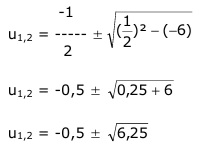

Aufgabe 153 9x + 3x = 6 (32)x + 3x = 6 | -6 32x + 3x – 6 = 0 Lösung durch Substitution: 3x = u --> 32x = u2 u2 + u - 6 = 0 p = 1 ; q = -6  u1,2 = -0,5 ± 2,5 u1 = -0,5 + 2,5 = 2 u2 = -0,5 – 2,5 = -3 Rücksubstituieren: 32 = 2 Gleichung logarithmieren: lg32 = lg2 x * lg3 = lg2 |:lg3 lg2 0,301 x1 = ------ = -------- = 0,63 lg3 0,4771 3x = -3 Gleichung logarithmieren. lg3x = lg–3 Keine Lösung, der Logarithmus einer negativen Zahl existiert nicht. L = {0,63}